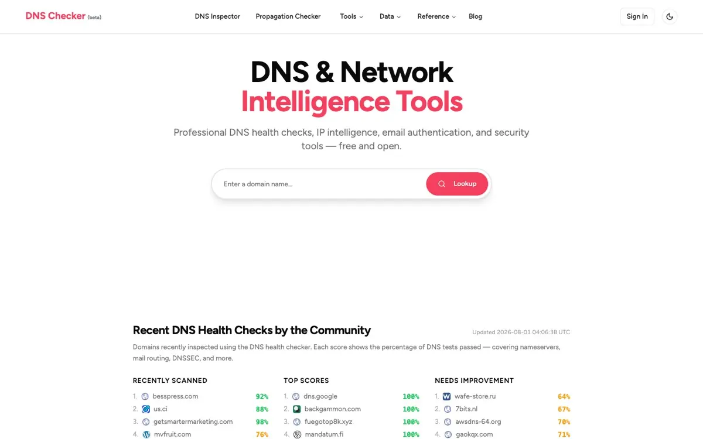

DNS Checker
Designed, written, and operated solo · dnschkr.com
A domain intelligence platform that analyzes more than 240 million domains a day. I own every layer: ingestion, the Elasticsearch index, the API, the front end, and the servers it runs on. Nobody else has ever had a commit in it, which is either a good sign or a warning, depending on your view of bus factor.